A pocket orchestra, and you are the composer, musician and conductor.
CONDUCTOR turns the FM-1 into a small symphony orchestra: strings, woodwinds, brass and percussion. Write parts, shape emphasis, chain the patterns into a piece and hear it all in a concert hall.
Download How to install SourcePress PLAY as soon as it starts: a short overture is loaded for you to showcase the possibilities of the firmware. It is also in SAVE 1, so you can load it again later (until you save something of your own there).
The orchestra
The orchestra is arranged as seen from the conductor’s podium: strings at the front, woodwinds behind, then brass, and percussion at the back. Each melodic section has a HIGH and a LOW part.
| Section | High | Low |
|---|---|---|
| Strings | violins | cellos |
| Woodwinds | oboes | bassoons |
| Brass | trumpets | horns |
| Percussion | eight drums of your choice | |
Every melodic part can play up to three notes at a time. Switch a part to solo to hear one player. The synthesized strings, wind and brass sounds were measured from recordings of real instruments.
The seats show what is happening: a chosen section is red, a tacet (silent) one fades, a solo part fades to its middle chair. The boxed letter beside each part is the pattern it is playing (A to J); the header shows the chosen section, its pattern, its marking and the tempo.
On this page
SELECT
Choose a section, from the back of the orchestra to the front.
KNOB 1
How strongly that section plays from pp to ff.
KNOB 2
The section’s balance in the mix, in dB.
KNOB 3
Transpose the whole orchestra live, a semitone at a time (not saved).
KNOB 4
The tempo.
ARP
Toggles between tutti (the whole section), solo (one player) and tacet (silent). Hold it for a sectional: that part alone.
EDIT
Open the chosen section's pattern.
SEQ
The Composer, to chain patterns into a piece. Its light stays on while the Composer is on. Hold it while playing for Fine – fermata: the piece finishes at the end of that pattern, and the last chord is held.
GLO
The MIX page, then the piece page, then the KEY page, then back.
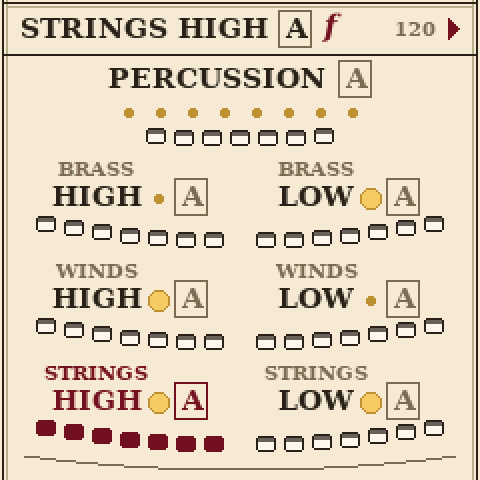
The orchestra page: every section in its seat, the chosen one in red.
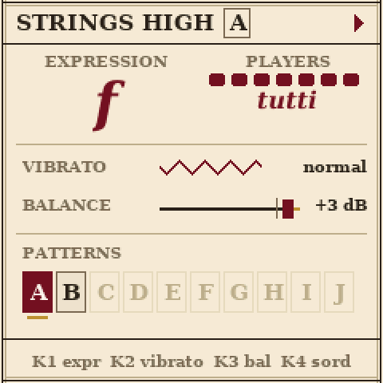
A part's page: FX strings, SEL woodwinds, ENV brass.
A part's page
Press FX, SEL or ENV for the strings, woodwinds or brass. The first press shows the HIGH part, the next the LOW. It shows how strongly the part plays, how many players it has, its vibrato and balance, and its ten patterns: the chosen one in red, ones with notes dark, empty ones pale. KNOB 1 sets its expression, KNOB 2 its vibrato (off, light, normal, wide), KNOB 3 its balance, KNOB 4 con sordino (a physical mute to quieten and dampen sound, for strings and brass); PRESETS chooses the pattern and ARP switches tutti, solo and tacet.
Each pattern remembers its own expression, players, vibrato and balance. Make pattern B a quiet solo and A stays a full section; when the music moves from A to B, the part changes with it.
Writing music
Each part has ten patterns, A to J. A pattern is one bar or more, and every part loops its own. Turn PRESETS to choose which pattern a part plays; while the music plays, the new one starts when the current one comes round.
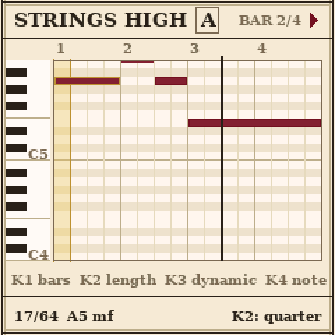
The piano roll: the cursor is the gold column.
The piano roll and the music
Press EDIT on the orchestra page or a part's page for the piano roll: a keyboard down the side, notes as bars as long as they sound, the cursor as a gold column. Press EDIT again for the notation: the same notes written as sheet music, on a staff with clef, time signature, rests, beams and ties. Press it once more for the pattern's expression curve.
Writing notes
SELECT
Move the cursor, step by step (each step a sixteenth note).
ARP + SELECT
Hold ARP and turn to jump a beat at a time.
Keys
Write at the cursor. Hold keys together for a chord. The cursor moves on when you let go.
KNOB 2
How long the note lasts, named as music does: 8th, quarter, half…
KNOB 3
The dynamic of an individual note: p mp mf f.
KNOB 4
Move the note at the cursor up or down a semitone.
ARP + KNOB 4
Nudge the note a step earlier or later.
ARP + REC
Undo your last edits; again to redo.
KNOB 1
The pattern's length, in whole bars.
ARP
A rest: removes the note at the cursor (inside a longer note, ends it there).
GLO twice
Clear the whole pattern.
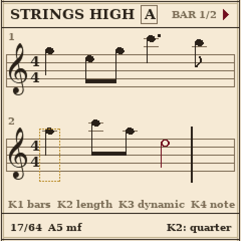
The music page: the cursor's note in a dotted gold box.
Articulations
On the piano roll or the music page, turn ALGORITHM to choose how a note is played. It applies to the note at the cursor and to every note you write after it, until you set it back to regular.
| Staccato | Short and detached. Marked with a dot. |
| Accent | Louder, with a quicker attack. Marked >. |
| Legato | Slurred smoothly into the next note, with no new attack. Marked with a slur. |
| Marcato | Strongly accented and a little short. Marked ^. |
| Pizzicato | Strings only: plucked instead of bowed, dying away by itself. Marked pizz. |
| Tremolo | Strings only: very fast bowing, a shimmering, dramatic sound. Marked with three strokes. |
| Trill | The note and the one above it in the key, in quick turns. Marked tr. |
Recording as you play
Tap REC, then press PLAY: what you play goes into the pattern that is playing. Each note starts and ends on the nearest step, so it comes out tidy, and you can watch it grow on screen while you hold it. Tap REC again to stop recording.
Recording across patterns: while recording, turn PRESETS to the next pattern. The one you are in plays to its end first, then the recording carries straight on into the next, and an empty pattern takes the same number of bars. Keys write notes at the cursor only when the music is stopped and REC is off; otherwise they just play.
Handy tools
Copy a pattern
Press SEQ on any editing page: a grid of every part's patterns. Choose the part with SELECT and the pattern with ALGORITHM, press SEQ twice, and your pattern becomes a copy of it, with its curve and settings, so the oboes can take the violins' tune.
Transpose
On an editing page, hold OCT- or OCT+ to move the whole pattern down or up an octave. A quick tap changes the keyboard's octave instead.
A new letter
Hold ARP and turn PRESETS: the pattern is copied into the next letter, ready for a variation.
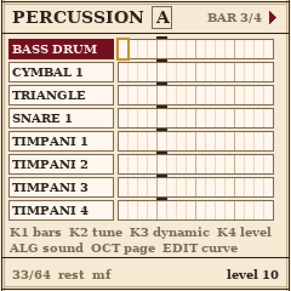
The percussion: a drum machine. LFO opens it.
The percussion
Press LFO. The percussion is a drum machine: eight slots as rows of steps, sharing one pattern. The black keys choose a slot (and play it); the white keys turn its steps on and off for the bar on screen. OCT- and OCT+ turn the page. The bottom line shows the step you are on, its dynamic, and the chosen slot's tuning and level.
Any slot can be any sound: choose a slot with SELECT and turn ALGORITHM. There are eleven: bass drum, cymbal 1 (clash cymbals), cymbal 2, triangle, snare 1 (an orchestral side drum), snare 2 (played hard), toms and timpani 1 to 4 (C2, G2, C3 and G3 to begin with). Toms and timpani are tuned with KNOB 2. For a timpani roll, put a hit on every step and raise the dynamic as it goes (KNOB 3) for a crescendo.
Expression, balance and the hall
Two different controls set how loud a section is, the way a real orchestra works.
| Expression | How strongly the section plays, from pp to ff. It changes the tone, not just the volume: loud brass turns brassy, loud strings brighter. A conductor shapes this. |
| Balance | Where the section sits in the mix, like a fader. Only the volume changes. A sound engineer sets this. |
If the trumpets are too loud, lower their balance and they still play f, just further back; lower their expression and they play softer and mellower.
Curves: crescendo and diminuendo
Each pattern can carry an expression curve (the music page shows it as hairpins under the staff) that swells or fades through it: press EDIT three times from a part's page (once from the music page). Turn SELECT for a ready-made shape (crescendo, diminuendo, swell), then move its points with the knobs. Or perform it: with REC on and the music playing, turn KNOB 1 on the orchestra page, and one pass of the pattern is recorded as its curve.
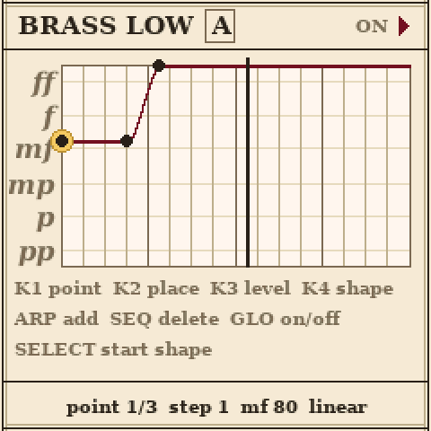
The horns' curve in the start-up piece: quieter in bar 1, coming in from bar 2.
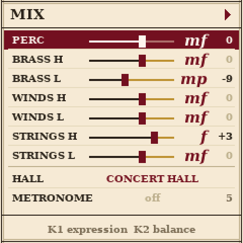
MIX: press GLO on the orchestra page.
The MIX page
Every section in a row. Choose one with SELECT: KNOB 1 its expression, KNOB 2 its balance. The keys play the section you are on, so you can hear it while you mix, and it stays chosen when you go back to the orchestra page.
The hall
The last row is the room the orchestra plays in: studio (close and dry), chamber, concert hall or cathedral (vast and ringing). Choose it with KNOB 1 or KNOB 2.
Pieces, time signatures and saving
The Composer
Press SEQ on the orchestra page. A row for each part, eight boxes each: each box plays a pattern once, then the next, round and round. Put A A B A in the strings and C D C D in the brass, and you have a piece with a form. A blank box carries on with the one before, and X is a rest, so a part can come in later. KNOB 4 turns the Composer on or off and PRESETS chooses one of ten pieces (PIECE A to J). If patterns aren't playing as you expect, there is a good chance the Composer is on.
Time signature
Press GLO twice from the orchestra page for the piece page: the time signature: 2/2, 3/8, 2/4, 3/4, 6/8, 4/4, 5/4 or 12/8. Turn SELECT to choose and press REC to confirm. Changing it clears every pattern, so it asks first: press REC again to go ahead.
The tempo (KNOB 4 on the orchestra page) counts the beat: a quarter note, a half note in 2/2, and a dotted quarter in 3/8, 6/8 and 12/8.
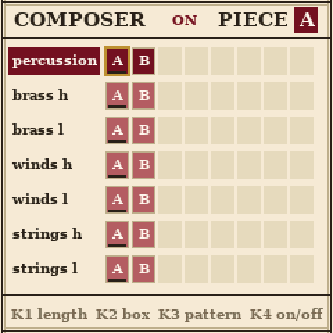
The Composer: pieces from patterns.
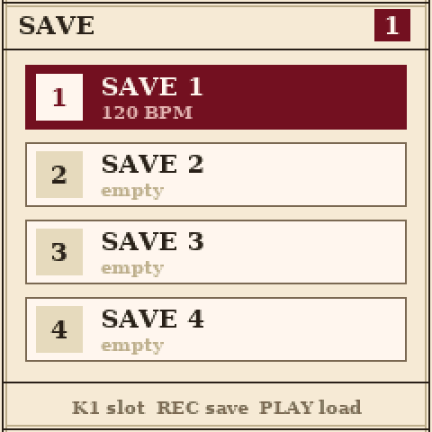
Four save slots: SAVE.
Key
Press GLO once more after the piece page for the KEY page. Turn SELECT to choose the key: the score then shows its key signature and spells its notes properly. Press REC twice to move the music itself into the key shown. The page shows the scale on a staff and on a piano, and the keys play there, so you can try it. KNOB 1 turns on scale lock (only the key's notes play) and KNOB 2 lights the key's notes on the keyboard.
Swing, humanise and tap tempo
The piece page's performance row has swing (every second sixteenth a little later, up to a triplet feel), humanise (each note slightly louder or softer and a touch late, like real players) and tap tempo: choose it with SELECT and tap any key in time. KNOB 1 sets swing and humanise. None of these clears your patterns. The tap tempo box also shows the tempo's Italian marking, from Grave through Largo, Adagio, Andante, Moderato and Allegro to Presto.
Metronome and count-in
The last row of MIX is the metronome: off, a one-bar count-in before you record, a tick on every beat while recording, or always: choose it with KNOB 1. KNOB 2 sets its level.
Saving
For pieces you want to keep, press SAVE: four slots, each the whole score. KNOB 1 chooses the slot, REC saves to it and PLAY loads it; each asks first, and the same button again does it. SAVE 1 holds the start-up piece until you save over it.
Starting over
Hold REC for a moment and a big card asks CLEAR ALL?. Press REC again to clear every pattern. Swing and humanise go back to off, and the mix to the middle: every section mf at 0 dB, the concert hall, the metronome off; every part plays tutti with normal vibrato, and nothing is tacet; the key goes back to C major, with scale lock and the keyboard's lights off. Any other button keeps everything.
MIDI
Play CONDUCTOR from a MIDI keyboard or a computer, over USB or the TRS jack. Channels 1 to 6 play the melodic parts (strings, woodwinds, brass, high then low) and channel 10 the eight drum slots with General MIDI drum notes.
All controls
Anywhere
| PLAY | Start and stop. |
| REC | Tap: recording on or off. Hold, then press again: clear everything. |
| FX SEL ENV | A part's page: strings, woodwinds, brass (again: the other part). |
| LFO | The percussion's drum machine. |
| HOME | The orchestra page. |
| SAVE | The save page. |
| PRESETS | The chosen part's pattern, A to J. Hold ARP and turn: copy it into the new letter. |
| OCT- OCT+ | Tap: the keyboard's octave. Hold on an editing page: the pattern down or up an octave. |
The orchestra page
| SELECT | The section. |
| KNOB 1 / 2 / 3 / 4 | Its expression / its balance / transpose the whole orchestra live / the tempo. |
| ARP | Tap: tutti, solo, tacet. Hold: a sectional, that part alone. |
| SEQ | Tap: the Composer. Hold while playing: Fine – fermata, the piece ends at its end with the last chord held. |
| GLO | MIX, then the piece page, then the KEY page, then back. |
| EDIT | The chosen section's pattern. |
The piano roll and the music
| SELECT | The cursor (the page follows it). |
| Hold ARP + SELECT | Jump a beat at a time. |
| Hold ARP + KNOB 4 | Nudge the note a step earlier or later. |
| Hold ARP + REC | Undo your last edits (again: redo). |
| ALGORITHM | Articulation: regular, staccato, accent, legato, marcato, trill (and pizzicato and tremolo for the strings). |
| KNOB 1 | The pattern's length in bars. |
| KNOB 2 | The note's length (or the next note's, on a rest). |
| KNOB 3 | The dynamic. |
| KNOB 4 | The note up or down a semitone. |
| ARP | A rest at the cursor (a quick tap). |
| SEQ | The copy page. |
| EDIT | Piano roll, the music, the expression curve, and back. |
| GLO twice | Clear the pattern. |
A part's page
| KNOB 1 / 2 / 3 | The chosen pattern's expression / vibrato / balance. |
| KNOB 4 | Con sordino on (right) or off (left): strings and brass only. |
| PRESETS | The pattern, A to J. |
| ARP | Tutti, solo, tacet. |
| EDIT | The piano roll. |
The drum machine
| SELECT or black keys | The slot. |
| ALGORITHM | The slot's sound. |
| White keys | Its steps on and off. |
| OCT- OCT+ | The page. |
| KNOB 1 / 2 / 3 / 4 | Length in bars / tuning (toms, timpani) / dynamic / the slot's level. |
| ARP | Mute the slot. |
| EDIT | The kit's expression curve. |
The expression curve
| KNOB 1 | Choose a point. |
| KNOB 2 / 3 / 4 | Its place / its level / the shape of the line after it. |
| ARP / SEQ | Add a point / delete one. |
| SELECT | A ready-made shape: flat, crescendo, diminuendo, swell. |
| GLO | The curve on or off. |
MIX and saving
| SELECT | MIX: the section, the hall or the metronome. |
| KNOB 1 / 2 | MIX: expression / balance (the hall: the room; the metronome: its mode / its level). |
| KNOB 1 | Save page: the slot. REC saves, PLAY loads (each twice). |
The piece page
| SELECT | Choose: a time signature, then swing, humanise and tap tempo. |
| REC | Change to the chosen time signature (twice: it clears every pattern). |
| KNOB 1 | Swing or humanise: off, 1 to 6. |
| Keys | Tap tempo chosen: tap any key in time. |
| GLO | The KEY page. |
The KEY page
| SELECT | The key, a sharp or flat at a time. |
| REC twice | Move the music itself into the key shown. |
| KNOB 1 / 2 | Scale lock / the key's notes lit on the keyboard. |
| Keys | Play, to try the key. |
| GLO | Back to the orchestra. |
The Composer
| SELECT | The part's row. |
| KNOB 1 / 2 / 3 | The piece's length (1 to 8 boxes) / the box / the box's pattern (blank, A to J, X for a rest). |
| KNOB 4 | The Composer on or off. |
| PRESETS | The piece, A to J. |
| SEQ or HOME | Back to the orchestra. |
Every page
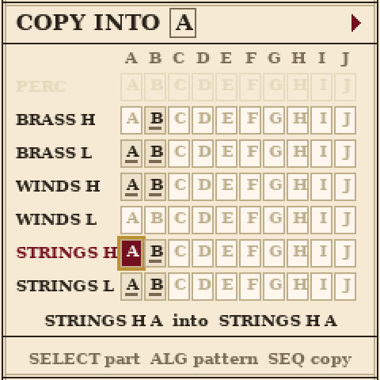
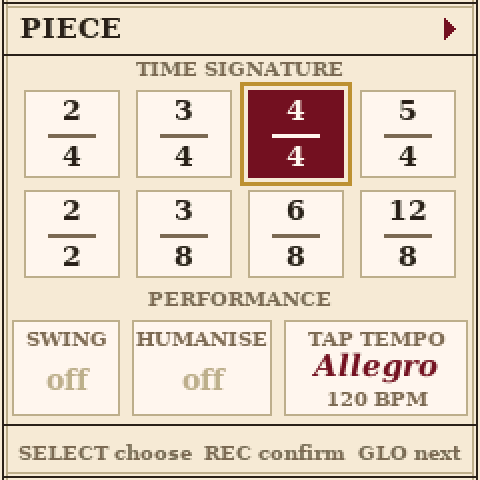
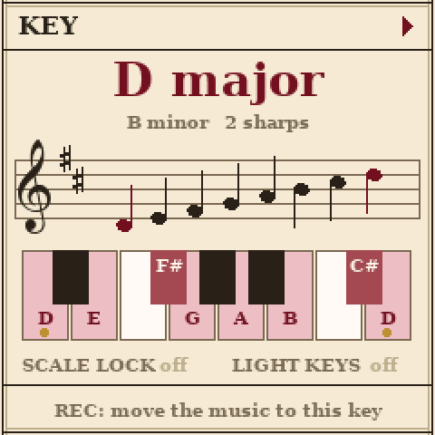
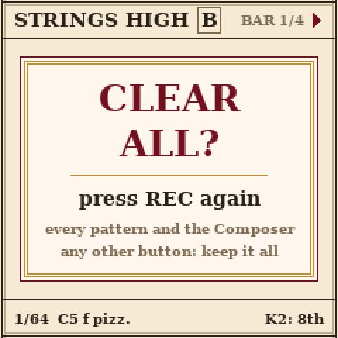